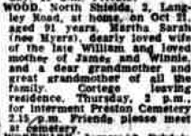
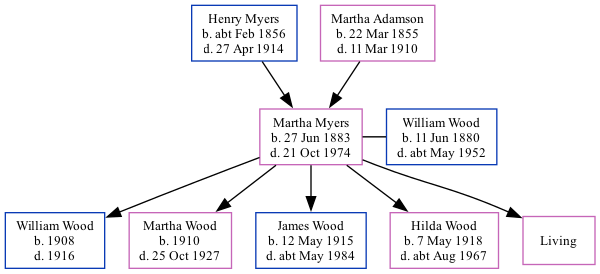

Martha Sarah Nicholson Wood (née Myers) 1883 - 1974
[ Home ] | [ Calendar ] | [ Surnames Index ] | [ Family History ]The daughter of Henry Myers (a steamboat man) and Martha Adamson, Martha Myers was born in Sunderland, Durham, England on Jun 27, 1883<span class="citation">1,2,3</span> and married William Wood (a plasterer with whom she had 5 children: <a href="I3054.html">William Henry</a>, <a href="I3055.html">Martha Sarah</a>, <a href="I3053.html">James</a>, <a href="I264.html">Hilda</a> and <a href="I3058.html">Wilhelmina</a>, along with 1 surviving child) in Tynemouth, Tyne and Wear, England around Nov 1907<span class="citation">4</span>.</p><p>Throughout her life, Martha lived in several places: at 16 Appleby Street, Chirton, Tyne and Wear on Apr 5, 1891<span class="citation">5</span>; at 48 Appleby Street, Chirton, Tyne and Wear on Mar 31, 1901<span class="citation">6</span>; at 40 Burdon Main Row in Tynemouth on Apr 2, 1911<span class="citation">7</span>; and on 3 Langley Road in Tynemouth on Sep 29, 1939<span class="citation">1</span> which is where she died on Oct 21, 1974<span class="citation">3</span>. She was buried at Preston Cemetery, Walton Avenue, North Shields, Tyne and Wear after Oct 21, 1974.
Parents
- Henry Briscoe Nicholson was born c. Feb 1856
- Martha Sarah was born on Mar 22, 1855
Children
- William Henry was born in 1908
- Martha Sarah was born in 1910
- James was born on May 12, 1915
- Hilda was born on May 7, 1918
Citations
- 1939 Register - Findmypast (was the wife of the head of the household)
- England & Wales births 1837-2006 - Findmypast
- England & Wales deaths 1837-2007 - Findmypast
- England & Wales Marriages 1837-2005 - Findmypast
- 1891 England, Wales & Scotland Census - Findmypast (was age 7 and the daughter of the head of the household)
- 1901 England, Wales & Scotland Census - Findmypast (was age 17 and the daughter of the head of the household)
- 1911 Census for England & Wales - Findmypast (was age 28 and the wife of the head of the household)
Media
Newcastle Evening Chronicle - 21 Oct 1974

1891 England, Wales & Scotland Census - GBC/1891/0029008408
England & Wales births 1837-2006 - BMD/B/1883/3/AZ/000391/157
England & Wales deaths 1837-2007 - BMD/D/1974/4/AZ/001278/135
1939 Register - TNA/R39/2949/2949G/010/24
England & Wales marriages 1837-2005 - BMD/M/1907/4/AZ/000280/020
Family Tree
Generated by Ged2Site. Last updated on Jul 20, 2025